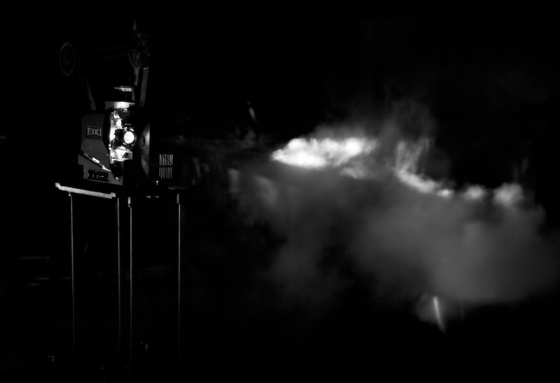

2013
Sound sculpture
Dry ice, feather, altered 16mm film loop, projector, kettle, water, bowl, microphone, speakers
An intervention on lightbeam that investigates unstable aspects of alchemical projection and a choreography of the body around the syntax of cinema.